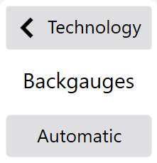

菜单、对话框和功能几乎都有分配给它们的图标。这个设计概念有助于直观地使用程序并创建一个整洁的用户界面。
Info: 当您显示或隐藏对话框时，显示屏将动态缩放以匹配界面。这允许您显示其他对话框，而不用覆盖现有视图。
页眉中的图标用于调用程序中所有区段 区段为用于某一折弯工位或折弯工位上的零件的折弯模具。和模块 (See «页眉中的元素»)。
选择页眉的文本区域 (A) 以显示其他菜单项目。当没有按钮被按下时，程序再次隐藏这些菜单项。

如果选定编辑工艺功能，则包含每一个工艺菜单按钮的菜单工具栏将显示在屏幕的左侧。

视图窗口包括主视图以及依据所选定的功能的附加对话窗口。依据菜单，对话窗口显示折弯过程 所需的一个或多个折弯的所有行动或程序被称为折弯过程。以及显示折弯顺序 折弯顺序是指零件上所有边缘进行折弯的特殊顺序。一个折弯零件通常能够采用各种不同的折弯顺序被折弯。如果折弯工序被自动设置，软件将计算出理想的折弯顺序并且之后将其分配给折弯零件。和工位方案 参见模具设置方案的视图。

在工具栏中的按钮用于启动动作或选择与视图相关的功能。如果在当前视图中无功能可用，则工具栏不显示。

信息列表显示所有待处理信息，指示状态以及来源。

这些对话框从右向左自动滑入界面。原始对话框被隐藏。点击对话框页眉 (A) 再次隐藏该对话框并再次显示前一个对话框。

选项卡用于以清晰明了的方式呈现软件的各个分区。用户点击相应的选项卡以显示对话框。每个选项卡都标有特定的图标或文字 (A)。

您可以使用此键盘对话框在一个框中输入自定义值。只要您选择允许自定义值的框，就会显示该对话框。

该对话框用于在框中输入数值。只要您选择允许数值的框，就会显示该对话框。

该对话框用于在一个框中输入预定义的值。只要您选择带有预定义值的框，就会显示该对话框。